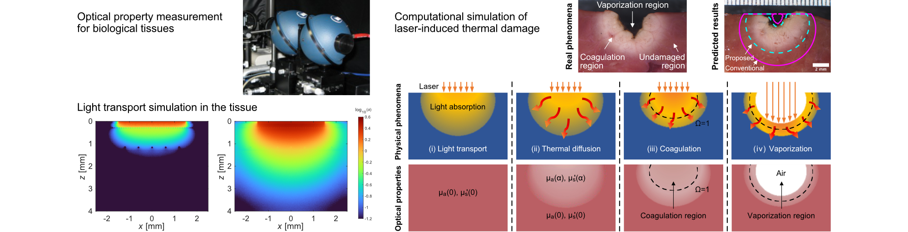
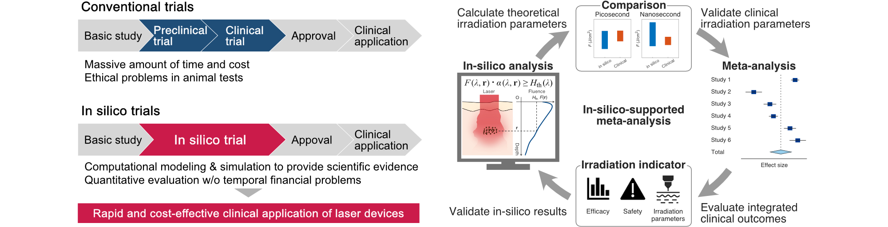

Research Projects
超短パルスレーザーによる皮膚疾患治療

アザやシミは，皮膚組織の一部にメラニン色素が過剰に沈着する症状です． レーザー照射による治療が主流で，近年では10億～100億分の1秒の時間単位でレーザーを照射するピコ秒レーザーが注目されています． ピコ秒レーザー治療では，炎症後色素沈着等の合併症が少ないと報告されていますが，治療効果に最も重要となる照射条件の設定は，術者の経験則に基づくことが多く，客観的な指標がありません． 本研究では，ピコ秒レーザーによる生体反応を解明し，それに基づく治療モデルを構築することで，一人ひとりの肌質やシミの状態に合わせて，最適な条件で再現性高くレーザー照射する技術を開発しています．
Related papers: Y. Shimojo et al., Lasers Surg. Med. 56, 404-418 (2024) Y. Shimojo et al., Lasers Surg. Med. 53, 1096-1104 (2021)
超低侵襲な疾患選択的レーザー治療技術の開発
レーザーは，シミ・あざ，がんを低侵襲に治療することができますが，レーザーが生体組織に散乱されて拡がることで，標的以外の血管等の正常組織に吸収されてしまいます． 治療で使用するレーザーのエネルギーは極めて高いため，正常組織に熱傷を誘発し合併症を生じる可能性があります． 本研究では，レーザーを標的に効率良く照射し，レーザーによる生体反応の病変選択性を向上させることで，正常組織に非侵襲な治療技術を開発しています．
Related papers: Y. Shimojo et al., Sci. Rep. 14, 20112 (2024).
生体組織の光学特性値計測
生体組織に対する非侵襲・低侵襲性が魅力である光診断・治療技術において，生体組織内の光分布を理解することは， 診断や治療している領域を定量的に把握し，正確かつ安全な診断・治療を実現するうえで非常に重要です． 組織内光分布は，生体組織の光学特性値（吸収係数，換算散乱係数）より決まります． 本研究では，光学特性値を計測する測定システムや解析アルゴリズムを開発し，ヒトや動物の様々な組織を測定しています． これまでに世界で初めてアジア地域のヒト皮膚光学特性値を報告しており，現在はデータベース化も進めています．
Related papers: Y. Shimojo et al., J. Biomed. Opt. 25, 045002 (2020)
計算機臨床試験 (in silico試験)
光診断・治療技術の臨床応用の拡大には，光・レーザーを照射する光学機器の高度化が重要ですが，臨床試験等にかかる時間・費用が制約となっています． 本研究では，レーザー照射によって生体組織に生じる物理化学反応のモデリング・計算機シミュレーション技術を開発し，これまで物理空間で行われていた試験を計算機上で再現する，計算機臨床試験という新たな試験法を開発しています． これまでの前臨床試験・臨床試験を補完・一部代替することで，新規光学機器が迅速かつ低コストに臨床応用されることが期待されます．
Related papers: Y. Shimojo et al., Sci. Rep. 13, 11898 (2023) Y. Shimojo et al., Lasers Surg. Med. 55, 304-315 (2023) Y. Shimojo et al., Laser Ther. 29, 61-72 (2020)
がんや感染症に対する光線力学治療
光線力学治療 (Photodynamic therapy; PDT) は，標的に蓄積させた光感受性薬剤へ低強度の光を照射し，活性酸素種を生成させることで抗腫瘍効果・殺菌効果をもたらす低侵襲な治療法です． 本研究では，在宅治療に向けた，貼付け式の有機ELフィルムを用いた細菌PDTの開発や，がんPDTの光照射管理に向けた，正常組織と腫瘍組織の実測した光学特性値に基づく治療シミュレータを開発しています．
Related papers: Y. Shimojo et al., JJSLSM 45, 153-160 (2024) R. Teranishi et al., Photodermatol. Photoimmunol. Photomed. 40, e12959 (2024)